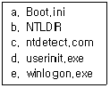
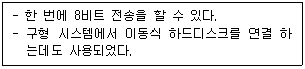
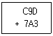

PC정비사-1급 (2015-04-05 기출문제)
1과목: PC운영체제
1. Windows XP의 부팅과 관련된 파일들이다. 부팅 과정에서 사용되는 순서대로 나열된 것은?

- a - b - c - d - e
- b - c - a - d - e
- b - a - c - e - d
- a - e - c - b - d
(정답률: 65%)

2. 외부 코덱이 설치되지 않은 상태의 Windows Media Player 10 에서 재생할 수 없는 미디어 파일은?
- mkv
- mp3
- asf
- avi
(정답률: 69%)
3. Windows XP 제어판 도구 중 시스템 신호음을 시각적으로 표시할 수 있도록 환경을 설정할 수 있는 구성 요소는?
- 디스플레이
- 시스템
- 프로그램 추가/제거
- 내게 필요한 옵션
(정답률: 73%)
4. 현재의 운영체제는 Windows XP이다. 이러한 환경에서 새로운 사용자를 등록하기 위해 ‘로컬 사용자 및 그룹’ 항목을 이용한다. 이때 각각의 이름에 대한 설명으로 잘못짝지어진 것은?
- Administrator - 컴퓨터/도메인 관리하도록 기본적으로 제공된 계정
- HelpAssistant - 원격 지원 제공 계정
- Guest - 게스트가 컴퓨터/도메인을 액세스하도록 기본 제공된 계정
- IWAM_[컴퓨터 이름] - 인터넷 정보 서비스에 액세스 하는데 사용되는 계정
(정답률: 67%)
5. PC 운영체제가 디스크에 수행하는 논리적 포맷을 수행할 때 만들어지는 디스크 영역이 아닌 것은?
- 부트 기록
- 운영체제 버전
- 파일 할당표(FAT)
- 루트 디렉터리
(정답률: 74%)
6. Windows XP에서 기본적으로 지원하지 않는 파일 시스템은?
- EXT2
- FAT16
- NTFS
- CDFS
(정답률: 65%)
7. 가상 메모리 설정 시 제공되는 정보가 아닌 것은?
- 드라이브[볼륨 레이블]
- 페이징 크기
- 선택된 드라이브의 페이징 파일 크기
- 선택된 드라이브의 세그먼트의 크기
(정답률: 61%)
8. Windows XP의 원격지원 서비스에 대한 설명 중 잘못된 것은?
- Windows Messenger, 전자 메일로도 원격지원 요청이 가능하다.
- 상대방의 IP 주소로도 원격 지원 요청을 할 수 있다.
- [시작]-[모든 프로그램]-[원격지원]을 선택하여 사용한다.
- 원격지원 서비스는 컴퓨터에 문제가 있을 경우 문제가 발생한 컴퓨터가 있는 장소에서 도와줄 사람이 도움 받을 사람의 컴퓨터를 직접 조작하는 것이 아닌, 인터넷을 이용하여 도움 받을 사람의 컴퓨터에 접속하여 제어를 하는 것을 말한다.
(정답률: 61%)
9. Windows XP의 레지스트리에 대한 설명 중 잘못된 것은?
- 텍스트 기반이며, 크기가 32KB를 넘지 못한다.
- 정렬된 계층구조를 가진다.
- HKey_Users키로 사용자별 정보를 지원한다.
- 원격지에서 관리와 시스템 정책을 할 수 있다.
(정답률: 63%)
10. Windows XP에서 제어판의 “네트워크 설정 마법사”의 기능과 거리가 먼 것은?
- 인터넷 연결 공유 설정
- Windows 방화벽 설정
- 파일 및 모든 장치 공유 설정
- 프린터 공유 설정
(정답률: 34%)
11. Windows XP에서 처음 시작할 때 자동 실행되는 프로그램을 수정할 수 있는 곳이 아닌 것은?
- 레지스트리
- msconfig.exe
- 시작 프로그램 폴더
- system.ini
(정답률: 73%)
12. Windows XP의 CMD 명령 창에서 autoexec.bat안의 Text로 작성된 내용을 화면으로 보고자 할 때 올바른 명령어는?
- dir autoexec.bat
- type autoexec.bat
- read autoexec.bat
- confirm autoexec.bat
(정답률: 60%)
13. Windows XP의 인터넷 정보 서비스(IIS)를 이용하여 제공하는 인터넷 서비스의 종류가 아닌 것은?
- NNTP 서버 구축
- Web 서버 구축
- SMTP 서버 구축
- FTP 서버 구축
(정답률: 55%)
14. 바이러스의 예방 방법으로 잘못된 것은?
- 반드시 하드디스크에서 부팅을 한다.
- 메모리카드의 쓰기 방지 탭을 사용한다.
- 중요한 데이터는 CD-ROM에 보관한다.
- 바이러스 백신 프로그램을 사용한다.
(정답률: 80%)
15. HDD 전문 백업 프로그램으로, 파티션 정보를 포함한 HDD백업이 가능하고 네트워크를 이용한 백업 및 복구가 가능한 프로그램은?
- GOPHER
- GHOST
- TOOLKIT PRO
- 하이퍼터미널
(정답률: 81%)
2과목: PC주변기기
16. HP사가 레이저프린터와 PC간의 통신을 제어하기 위하여 개발한 특수 언어로 올바른 것은?
- ECL
- PCL
- CCD
- ECP
(정답률: 68%)
17. VGA 카드의 해상도가 1024*768 이면서 256 컬러를 지원하기 위해 필요한 최소의 비디오 메모리 용량은?
- 1MB
- 512KB
- 256KB
- 128KB
(정답률: 52%)
18. CPU 성능 평가 지표가 아닌 것은?
- 클럭속도
- 캐시 메모리
- 집적도
- RAM속도
(정답률: 76%)
19. 다음 중 다른 세 가지와 달리 수치가 클수록 성능이 낮아지는 것은?
- CPU 성능(MHz)
- RAM의 Access 속도(ns)
- CD-ROM 성능(배속)
- LAN 연결속도(bps)
(정답률: 74%)
20. 일반적으로 사용되는 BGA타입의 칩셋에서 사우스 브릿지(South Bridge)가 담당하는 장치가 아닌 것은?
- USB
- 마우스
- AGP
- 전원관리 컨트롤러
(정답률: 45%)
21. PC의 버스 인터페이스 방식이 아닌 것은?
- ISA
- PCI-E
- AGP
- FPGA
(정답률: 64%)
22. 다음 소켓 규격 중 AMD CPU용으로 사용되지 않는 것은?
- 소켓 FM2
- 소켓 AM3
- 소켓 754
- 소켓 1155
(정답률: 59%)
23. 다음에 설명하는 장치나 인터페이스의 명칭으로 올바른 것은?

- SCSI 버스
- 직렬 포트
- 병렬 포트
- 네트워크 카드
(정답률: 50%)
24. 'IEEE 1284'는 무엇에 대한 규격인가?
- 직렬포트
- USB
- 병렬포트
- LAN
(정답률: 54%)
25. SCSI 커넥터와 케이블에 대한 설명이다. 옳지 않은 것은?
- 커넥터는 핀 수에 따라 25핀, 50핀, 68핀으로 구분된다.
- 내장형 SCSI는 보통 SCSI어댑터에 리본형 케이블을 연결하고 50핀은 고밀도 60핀은 표준커넥터로 사용한다.
- 만일 내장형 장치 중에 SCSI어댑터와는 다른 형태의 커넥터로 되어 있다면 컨버터가 필요하다.
- 브라켓컨버터는 커넥터가 달린 브라켓과 리본케이블 그리고 SCSI어댑터의 커넥터에 연결할 수 있는 커넥터로 구성된다.
(정답률: 43%)
26. 전자 악기간의 디지털 신호를 주고받기 위하여 각종 신호를 약속한 일종의 약속 언어인 MIDI의 원어로 올바른 것은?
- Multi Interface for Digital Instrument
- Multi Input Data Instrument
- Musical Instrument Digital Interface
- Musical Interface for Digital Input
(정답률: 61%)
27. 무선랜 카드의 인터페이스가 아닌 것은?
- PCIe
- USB
- PCMCIA
- NetSpot
(정답률: 58%)
28. 컴퓨터를 사용하는 도중 갑자기 정전되면 작업 중인 데이터를 잃어버리거나 심한 경우 시스템에 치명적인 손상을 입게 된다. 갑작스런 정전이 발생할 경우 일정 시간동안 전기를 공급하여 시스템을 안정적으로 사용하도록 도와주는 장치는?
- AVR
- UPS
- CPS
- IPS
(정답률: 80%)
29. 다음은 TV수신카드 제품사양의 한 예이다. 잘못 연결된 것은?
- CHIPSET - S-Video 입력
- CAPTURE - 동영상, 정지화면 저장(640*480)
- CAPTION - Closed(자막방송)
- INTERFACE - PCI 방식
(정답률: 57%)
30. 화상 채팅을 하기 위해 반드시 필요한 장비가 아닌 것은?
- 헤드폰 셋
- PC 카메라
- MPEG 보드
- 사운드 카드
(정답률: 68%)
3과목: 디지털 논리회로
31. 4개의 쿼드비트(Quadbit)를 비트(bit)로 환산한 결과 값은?
- 8
- 16
- 32
- 64
(정답률: 59%)
32. 다음중 바이폴라 소자가 아닌 것은?
- RTL
- HTL
- TTL
- CMOS
(정답률: 60%)
33. 그레이 코드 0101을 2진 코드로 변환한 것은?
- 0110
- 1010
- 1011
- 0100
(정답률: 47%)
34. 다음 16진수를 계산한 답 중 옳은 것은?

- 1111
- 0C78
- 1440
- 1451
(정답률: 57%)
35. 다음 중 전자계산기의 기억요소(Memory Element)로 사용하는 장치가 아닌 것은?
- Disk
- Flip Flop
- Register
- Inverter
(정답률: 72%)
4과목: PC유지보수
36. Award BIOS를 사용하는 시스템에서 전원을 켰더니 1번은 길게, 3번은 짧게 "삐익~ 삐삐삐" 비프 음이 들리면서 부팅이 되지 않는다. 이 경우 예상되는 에러는?
- 메모리 동작 오류
- 디스플레이 장치 인식 오류
- 전원 불량
- E-IDE 인식 오류
(정답률: 41%)
37. 시스템 부팅 과정 중 화면에 나오는 "Verifying DMI Pool Data"라는 메시지의 의미는?
- 시스템에 설치된 OS의 종류를 확인한다는 메시지
- CMOS 셋업에 설정된 대로 메인보드에 연결된 각 장치들이 사용하는 자원을 확인하면서 내보내는 메시지
- CMOS에 Data가 없다는 메시지
- POST 과정을 다 끝냈다는 메시지
(정답률: 57%)
38. 리눅스 파티션의 종류가 아닌 것은?
- Primary 파티션
- Extended 파티션
- Logical 파티션
- Physical 파티션
(정답률: 53%)
39. Windows XP의 복구 콘솔 명령어와 사용법에 대한 내용 중 연결이 잘못된 것은?
- fixmbr - 부팅 디스크의 마스터 부팅 레코드를 복구할 때 사용
- bootcfg - boot.ini 파일을 구성, 변경하는 명령어
- map - 사용할 수 있는 모든 서비스와 드라이버를 표시
- attrib - 파일 및 디렉터리 속성을 변경
(정답률: 54%)
40. 도스모드에서 CD-ROM 인식과 관련이 없는 파일은?
- AUTOEXEC.BAT
- MSCDEX.EXE
- OAKCDROM.SYS
- SYSTEM.INI
(정답률: 65%)
41. CD 레코딩 작업 중 발생되는 “Buffer Under Run” 에러의 해결책으로 잘못된 것은?
- 레코딩 작업 중 다른 작업을 병행하지 않는다.
- 레코딩 기록 속도는 낮춰준다.
- 이미지 파일을 만들어 레코딩 작업을 한다.
- 하드디스크의 빈 공간을 확보한다.
(정답률: 52%)
42. Windows를 사용하는 도중 속도가 점점 느려지는 현상이 발생하였다. 문제의 원인으로 잘못된 것은?
- 레지스트리가 점점 커지고 불필요한 내용이 쌓이기 때문이다.
- Windows에서 사용하는 DLL과 드라이버 파일이 많아지기 때문이다.
- 하드디스크의 단편화가 심해지기 때문이다.
- 디스크 캐시와 가상 메모리의 성능이 저하되기 때문이다.
(정답률: 51%)
43. Windows를 사용하던 중 “KERNEL32.DLL에서 잘못된 연산이 수행되었습니다.”라는 메시지가 나타나는 이유로 잘못된 것은?
- 어플리케이션간 메모리 충돌이 일어날 때
- KERNEL32.DLL의 버전이 다르거나 손상된 경우
- CPU와 메모리의 FSB가 맞지 않을 경우
- 메인 메모리가 불량인 경우
(정답률: 65%)
44. 케이스 전면의 스위치 표시 램프에 대한 설명으로 맞는 것은 ?
- LED는 디스크가 움직일 때 불이 들어온다.
- LED는 방향을 반대로 연결해도 문제가 없다.
- LED스위치는 극성이 없으므로 위치만 맞으면 된다.
- LED에 항상 불이 안들어오면 컴퓨터에 이상이 생긴 것이다.
(정답률: 60%)
45. 현재 운영하고 있는 Web 서버에 사용자가 급증하여 응답 시간이 현저히 늦어지는 현상이 발생할 경우 시스템의 응답 시간을 빠르게 하기 위한 조치 방법으로 잘못된 것은?
- CPU 사용량을 확인하여, Web 서버 컴퓨터를 CPU가 여러 개로 구성된 병렬 컴퓨터 시스템으로 교체한다.
- 네트워크 전송량을 확인하여, Web 서버 컴퓨터가 연결된 전용선을 좀 더 용량이 큰 회선으로 교체한다.
- 메모리 사용량을 확인하여, Web 서버 컴퓨터의 주기억(Main Memory) 장치 용량을 늘린다.
- 하드디스크 사용 빈도를 확인하여, Web 서버 컴퓨터의 하드디스크 용량을 늘린다.
(정답률: 63%)
46. 마우스의 인터페이스를 보면 최근에는 PS/2나 USB이지만 이전에는 Serial 포트를 인터페이스로 사용하였다. Serial 포트를 사용할 경우 컴퓨터 내부의 어떤 장치와 IRQ의 충돌이 일어날 수 있는가?
- HDD
- VGA Card
- MODEM
- FDD
(정답률: 57%)
47. EIDE 방식의 하드디스크를 추가하였으나 인식하지 못할 때, 취할 수 있는 적절한 조치로서 잘못된 것은?
- 케이블이 정확하게 연결되었는지 케이블의 방향은 정확하게 연결되었는지에 대해 확인한다.
- 전원 커넥터가 제대로 접속되어 있는지 혹은 헐겁게 연결되어 있는지 확인한다.
- Master/Slave를 결정해 주는 점퍼가 제대로 설정되어 있는지 확인한다.
- 디스크 베이에 디스크가 견고하게 고정되어 있는지 확인한다.
(정답률: 74%)
48. 하드디스크의 논리적인 Bad Sector를 제거하기 위한 방법으로 올바른 것은?
- BIOS Setup에서 하드디스크의 Type 설정을 변경한다.
- 휴지통을 비운다.
- Low Level Format을 실시한다.
- 디스크 조각 모음을 실행한다.
(정답률: 74%)
49. CPU가 64비트로 업그레이드 되었다는 의미는?
- 외부버스 : 64비트, 내부버스 : 32비트
- 외부버스 : 32비트, 내부버스 : 64비트
- 외부버스 : 32비트, 내부버스 : 32비트
- 외부버스 : 64비트, 내부버스 : 64비트
(정답률: 75%)
50. CPU가 CAS/RAS 에 신호를 보내어 메모리의 정보가 도착할 때까지의 시간을 나타내는 용어는?
- Lead
- Delay
- Latency
- Integrity
(정답률: 66%)
5과목: PC네트워크
51. 패킷 스위칭 방식의 설명으로 잘못된 것은?
- 패킷 단위로 데이터 전송이 일어난다.
- 메시지를 일정 크기로 자른 것을 패킷이라 한다.
- Store-and-Forward 방식을 이용한다.
- 많은 양의 정보를 연속으로 보낼 때 유효한 방식이다.
(정답률: 62%)
52. OSI 7계층의 응용 계층에 속하지 않는 것은?
- Telnet
- ICMP
- SNMP
- SMTP
(정답률: 40%)
53. 임의의 스위칭 허브에서 MDIX, MDI 전환기능을 지원하지 않을 경우 스위칭 허브와 스위칭 허브를 연결하기 위한 방법으로 적합치 않은 것은?
- 스위칭 허브 <- (CrossLink) -> 스위칭 허브
- 스위칭 허브 <- (Link) ->스위칭 허브
- 스위칭 허브 <- (Matrix Cable) -> 스위칭 허브
- 스위칭 허브 <- (Port Trunk) -> 스위칭 허브
(정답률: 64%)
54. 라우터와 브리지의 비교 설명으로 잘못된 것은?
- 브리지는 네트워크 안의 모든 컴퓨터에 대한 정보를 전부 가지고 있어야 한다.
- 브리지는 네트워크 넘버를 가지고 있지 않고, 네트워크에 브로드캐스트를 생성하기 때문에 많은 수의 컴퓨터를 연결 할 경우 문제를 만든다.
- 라우팅 네트워크를 갖는 경우에도 브로드캐스팅에 의해 많은 양의 대역폭을 잠식당한다.
- 라우터에서는 인터네트워크 안에 있는 다른 네트워크의 번호, 패킷을 보내는데 필요한 최적 경로정보, 인터네트워크 환경의 변화에 따른 네트워크 토폴로지를 가지고 있어야 한다.
(정답률: 39%)
55. 다음 중 무선 랜의 기본 전송 기술 중 DSSS(Direct Sequence Spread Spectrum) 방식에 대한 설명 중 잘못된 것은?
- 넓은 대역으로 데이터를 확산하여 전송한다.
- 보안성이 우수하다.
- 강한 잡음에 전송 품질을 매우 잘 유지한다.
- 2.4GHz~2.5GHz 대역의 주파수를 사용한다.
(정답률: 40%)
56. 다음 중 Internet에 직접 노출될 수 없는 사설 IP Address는?
- 81.25.226.11
- 192.168.1.254
- 165.1.64.6.
- 202.30.128.27
(정답률: 58%)
57. Windows를 사용하는 컴퓨터에서 노벨 NetWare에 접속하고자 할 경우에 설치해야 하는 프로토콜은?
- TCI/IP
- IPX/SPX 호환 프로토콜
- NetBEUI
- NetBios
(정답률: 49%)
58. 텍스트 방식으로 접속했을때 사용하는 인터넷 검색 방법은?
- Gopher
- IRC
- Telnet
- WWW
(정답률: 30%)
59. 프록시 서버(Proxy Server)의 기능을 가장 올바로 설명한 것은?
- 자주 접속하는 사이트의 데이터를 서버에 저장 해 둠으로서 인터넷 속도를 개선한다.
- 접속했던 사이트의 기록을 제거한다.
- 인터넷 접속을 위한 통신 프로토콜이다.
- 웹 서비스외에 뉴스 그룹이나 FTP 서버에 접속하기 위해서는 반드시 있어야 한다.
(정답률: 65%)
60. Windows XP에서 지원하는 인터넷 연결 방화벽(ICF)은 어떤 방식인가?
- 애플리케이션 방화벽
- 상태 저장 방화벽
- 서킷 방화벽
- 하이브리드 방화벽
(정답률: 42%)
b - BOOTMGR 파일은 부팅 매니저로, 시스템 파티션에서 가장 먼저 실행됩니다.
a - NTLDR 파일은 이전 버전의 Windows에서 사용되던 부트로더로, BOOTMGR이 NTLDR을 찾아 실행합니다.
c - boot.ini 파일은 부팅 옵션을 설정하는 파일로, NTLDR이 이 파일을 찾아 부팅 옵션을 설정합니다.
e - HAL.dll 파일은 하드웨어 추상화 레이어로, 시스템 하드웨어와 상호작용하여 Windows가 부팅될 수 있도록 합니다.
d - ntoskrnl.exe 파일은 Windows 커널로, Windows 운영체제를 실행하는 핵심 파일입니다. HAL.dll과 함께 Windows 운영체제를 초기화하고 실행합니다.
따라서, 부팅 과정에서는 BOOTMGR이 가장 먼저 실행되고, NTLDR을 실행하여 boot.ini 파일을 찾아 부팅 옵션을 설정한 후, HAL.dll과 ntoskrnl.exe 파일을 실행하여 Windows 운영체제를 초기화하고 실행합니다.